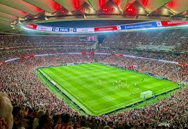
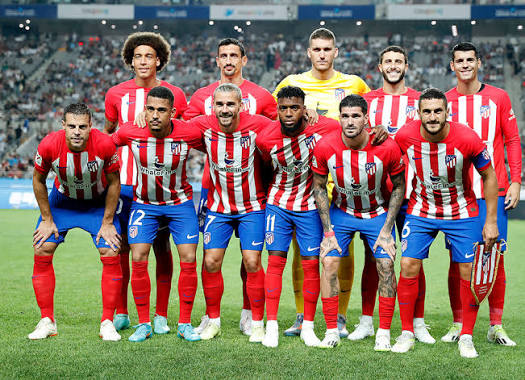

Founded
1903
Spain
Discover the history, stadium, legendary players, major trophies, records, and interesting facts about Atlético Madrid.
Introduction
Atlético Madrid is a professional soccer club based in Madrid, Spain. The club was founded in 1903 and has developed into one of the most successful clubs in Spanish soccer. Atlético is famous for its red and white striped shirts, passionate supporters, strong team identity, and intense rivalries.
The club plays its home matches at the Metropolitano Stadium in Madrid. Atlético moved into the stadium in 2017 after leaving the Vicente Calderón, which had served as the club's home for more than 50 years. The Metropolitano provides the club with a modern home and a large atmosphere for important matches.
Atlético Madrid is commonly known as "Atleti" and "Los Colchoneros." The second nickname translates to "The Mattress Makers" and is connected to the club's red and white striped colors, which resembled the traditional material once used on mattresses in Spain.
Many famous players have represented Atlético Madrid, including Luis Aragonés, Fernando Torres, Diego Forlán, Sergio Agüero, Radamel Falcao, Antoine Griezmann, Diego Godín, Koke, and Jan Oblak. These players have represented different generations of a club known for determination and competitive spirit.

About the Club
Atlético Madrid was founded on April 26, 1903, by a group of students in Madrid. The club originally had connections with Athletic Club from Bilbao and was first known as Athletic Club de Madrid. Over time, Atlético developed its own identity and became an important part of soccer in the Spanish capital.
Atlético began establishing itself as a major Spanish team during the first half of the 20th century. The club won its first Spanish league championship in 1939-40 and successfully defended the title the following season.
Another successful period arrived during the 1960s and 1970s. Atlético won several domestic trophies and also experienced success in European competition. In 1962, the club won the European Cup Winners' Cup, giving Atlético an important international trophy.
In 1974, Atlético reached the European Cup final against Bayern Munich. The Spanish club came extremely close to becoming European champion before Bayern equalized late in extra time. A replay was held two days later, which Bayern won.
Atlético experienced both success and difficult periods during the following decades. The club won a memorable league and Copa del Rey double during the 1995-96 season. However, only a few years later, Atlético was relegated to Spain's second division before eventually returning to La Liga.
One of the most important modern periods began when former Atlético player Diego Simeone became manager in 2011. Simeone developed a team known for its organization, defensive strength, intensity, and willingness to fight for every result.
Under Simeone, Atlético won the Europa League in 2012 and later produced a remarkable 2013-14 season. Atlético won La Liga ahead of Real Madrid and Barcelona and also reached the Champions League final. The club reached another Champions League final in 2016.
Atlético won another Europa League title in 2018 and captured La Liga again in the 2020-21 season. These accomplishments helped establish Atlético as a consistent challenger to Spain's traditionally dominant clubs while strengthening the club's reputation across Europe.

Club Details
1903
Madrid, Spain
Metropolitano Stadium
Red, White, and Blue
Club Record
Antoine Griezmann is Atlético Madrid's all-time leading goalscorer. The French forward passed club legend Luis Aragonés to become Atlético's record scorer in 2024. Griezmann has been an important part of several successful Atlético teams and has contributed with both goals and assists.
Success
Legendary Players
Atlético Madrid has had many world-class players, but no player has won the men's Ballon d'Or while representing Atlético Madrid.
Several Atlético players have still received major international recognition. Antoine Griezmann came especially close, finishing third in the Ballon d'Or voting in both 2016 and 2018 while he was an Atlético Madrid player.
Did You Know?